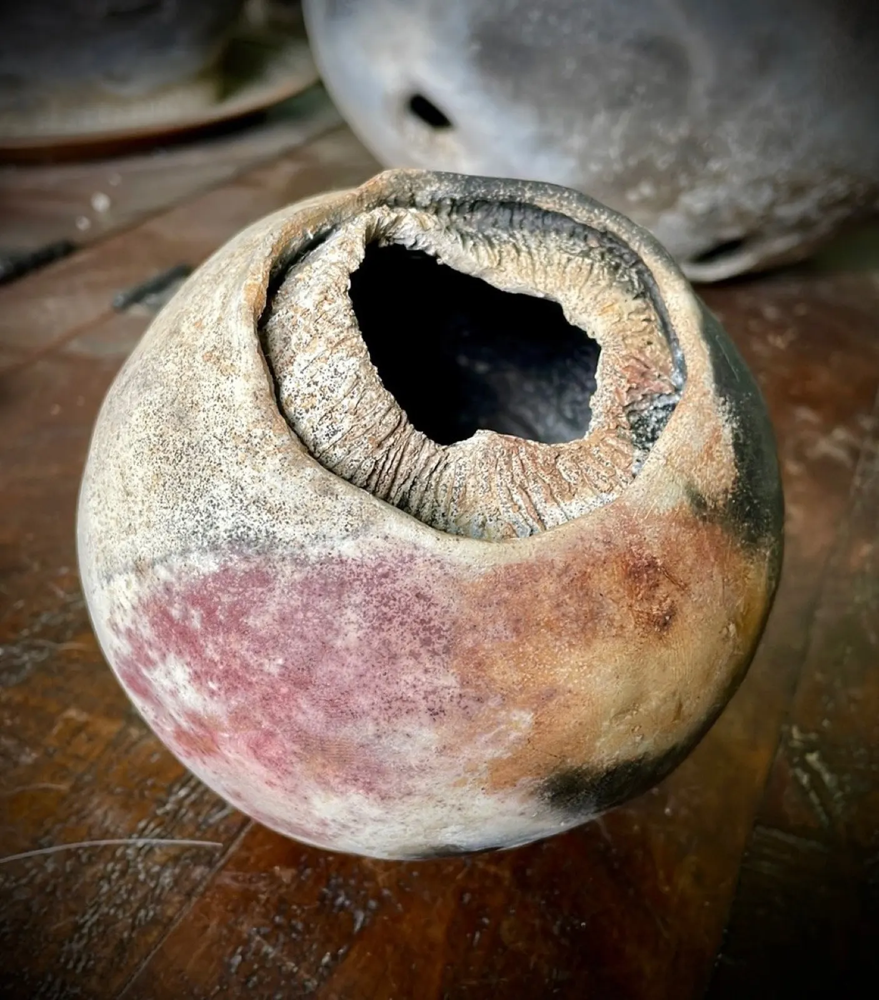
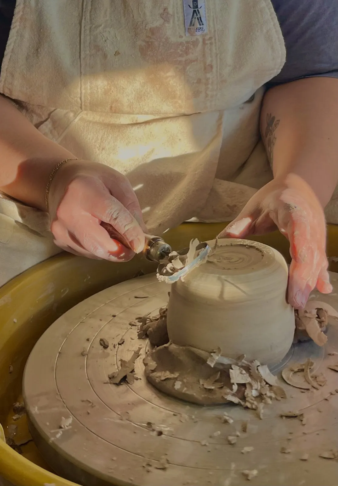
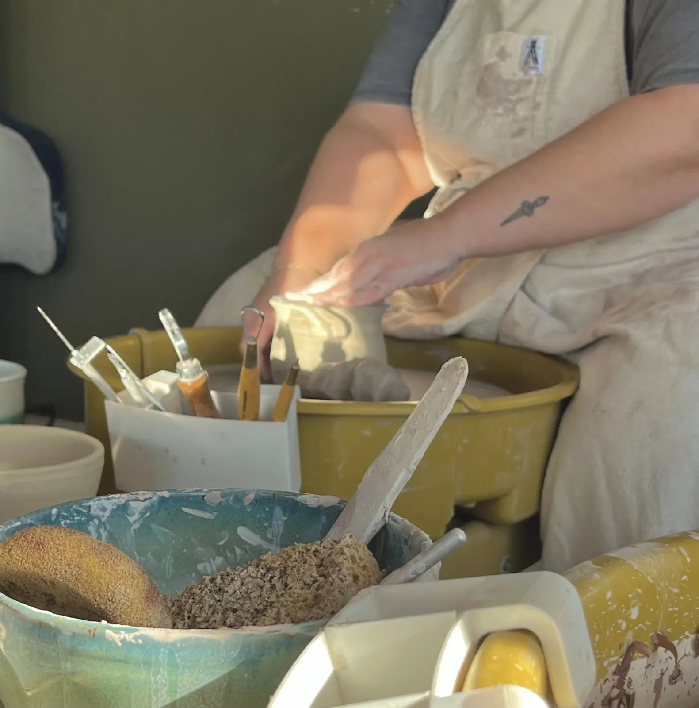
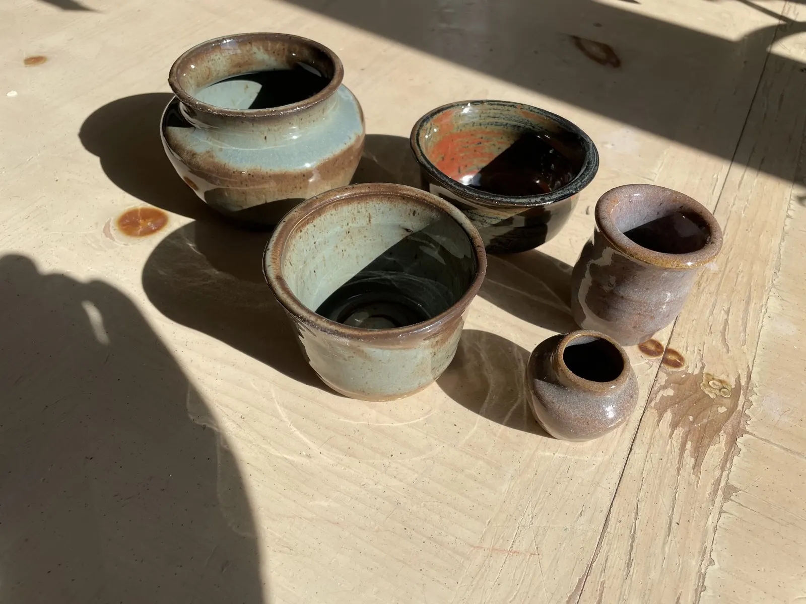
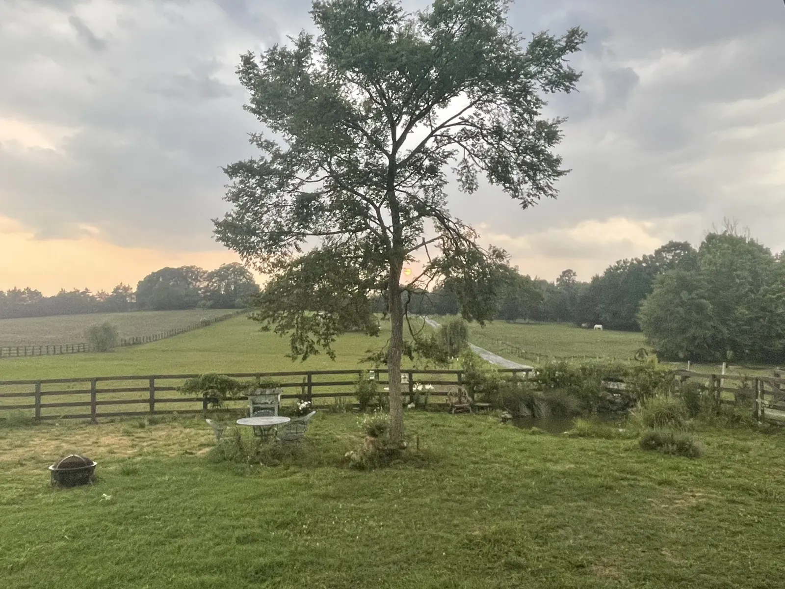
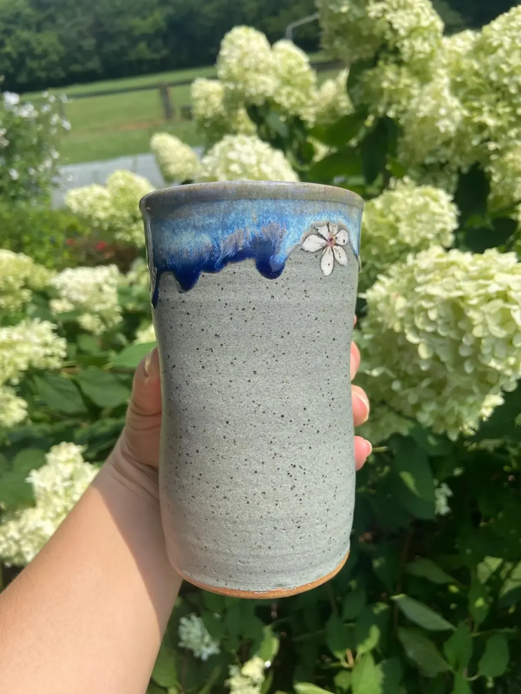
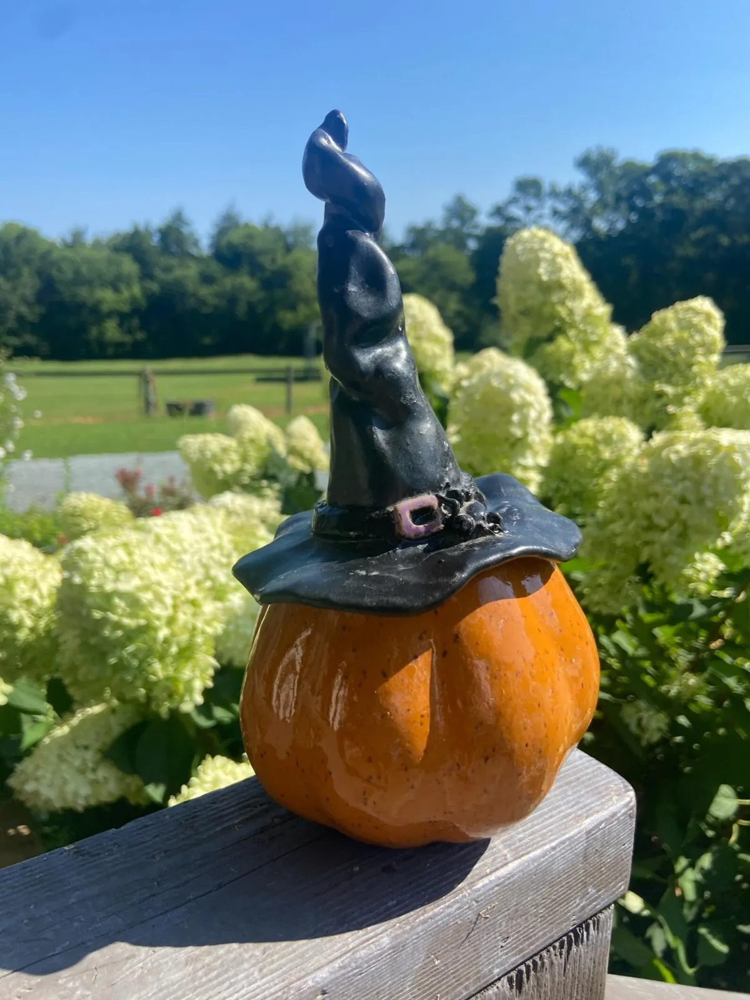
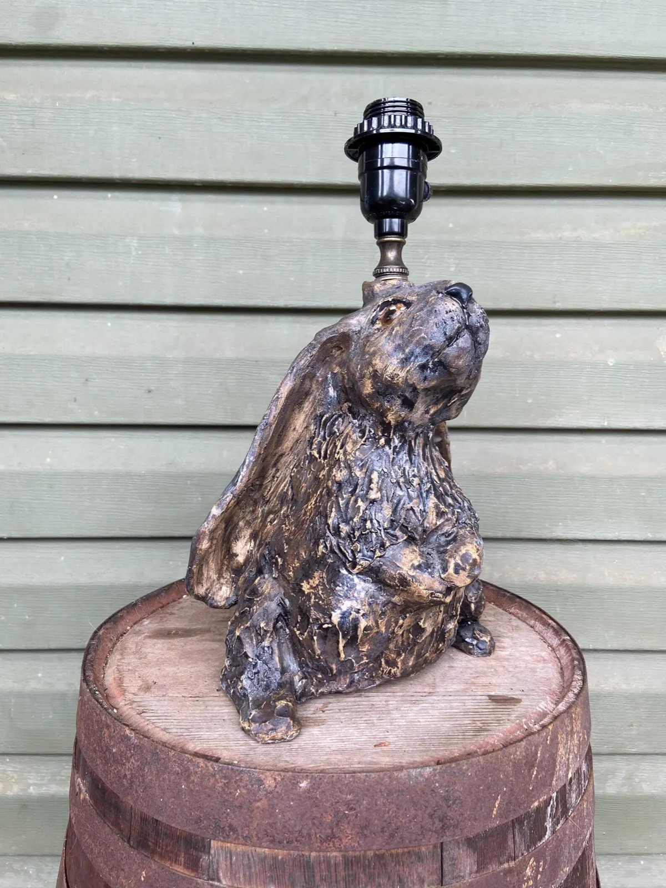
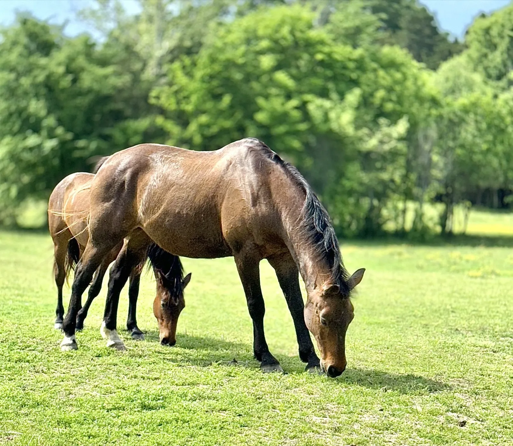

On-farm hand-building experience
Make something by hand while enjoying the view. Limited to 8 people; you choose 1 glaze for each piece from a selection of 5.
- 1 person, 1 hour$125
- 2+ people, 2 hours$125 per person
- Plus package+$30 per person
Pottery studio on a farm · 7816 West Duncan Road, Indian Trail, NC


Slow down, develop friendships, relax and get dirty.
Wheel-throwing, hand-building and sculpting classes right here on the farm, private clay experiences for small groups, and raku, barrel and pit firing when the weather allows.
Unplug from the daily grind and discover the muddy, magical world of clay, in an intimate class of no more than 6 students.
Oct. 26 – Dec. 14
10 am–12:30 pm
Advanced Beginner & Intermediate Wheel-Throwing
6–8:30 pm
Advanced Beginner & Intermediate Wheel-Throwing
Full, waitlistOct. 27 – Dec. 15
6–8:30 pm
Beginner & Advanced Beginner Wheel-Throwing
Oct. 28 – Dec. 16
7-week class, $330 · no class Nov. 25
10 am–12:30 pm
Beginner & Advanced Beginner Wheel-Throwing
6–8:30 pm
Intermediate & Advanced Wheel-Throwing
Focus on alternative firing and glazing techniques
Nov. 5 – Dec. 17
6-week class, $284 · no class Nov. 26
10 am–12:30 pm
A Taste in Clay: wheel and hand-building
6–8:30 pm
Advanced Beginner & Intermediate Wheel-Throwing
Mornings Nov. 6 – Dec. 18, evenings Oct. 23 – Dec. 18
Mornings 6 weeks, $284 · evenings 7 weeks, $330 · no class Oct. 30 & Nov. 27
10 am–12:30 pm
Hand-Building & Sculpting, all levels
6–8:30 pm
Hand-Building & Sculpting, all levels
Oct. 24 – Dec. 19
No class Nov. 28 · evenings reserved for clay experiences and events
10 am–12:30 pm
Beginner & Advanced Beginner Wheel-Throwing
2–4:30 pm · New
Advanced Beginner to Intermediate Wheel-Throwing and Alternative Firing Techniques
8-week courses are $370, taxes and fees included. Price includes tool use, clay, glazing and firing.


For little or no experience, or if you’ve only taken one or two wheel classes: hands-on guidance to confidently start your pottery journey.
For students who can center their clay and throw a 6" cylinder with relative consistency, and are ready to develop a more critical eye for form.
The creative hub for independent and seasoned potters, where students share tips, troubleshoot advanced techniques together and offer creative feedback.
3 weeks on the potter’s wheel and 3 weeks of sculpting or hand-building, then longer projects: the way to find which style you like best.
Slab, coil and sculpting by hand, with surface design and glazing. All skill levels welcome.
What to bring: just a towel and an optional apron. Reclaimed clay is free to use; additional clay is available for purchase.
Alternative firings are offered on the farm and are weather dependent. Students in other classes typically use raku clay to take part.

Join a cozy small-group workshop or book the entire studio for a private party. No prior experience needed: you bring the creativity, we handle the rest.
Make something by hand while enjoying the view. Limited to 8 people; you choose 1 glaze for each piece from a selection of 5.
Up to six people, for a personalized and intimate experience with our professional artists. We beautifully finish your pieces, ready for you to take home.
Finished works take up to four weeks and must be picked up within 60 days; shipping is available for an additional fee. Please book in advance.
Private classes & group eventsA completely tailored, 3-hour private lesson and clay experience, customized entirely to your creative goals. Dates are strictly limited.
From $500per person
Request a date by email“I am excited to provide a different kind of environment for people to be creative.”
Tanya Pohlmann, founder of Cedar Oak Farm & Pottery
Founder
Tanya earned a BFA in ceramics and sculpture from Colorado State University, then a master’s in fine arts from the University of Hartford. She spent many years in corporate America but kept working with clay, and that experience gave her the skills to start her own business.
Josh and Michelle both have a gift for teaching, though they bring completely different artistic approaches to the studio.
Enjoys alternative firing techniques and embraces the “perfectly imperfect,” creating an environment where creativity flows and results often exceed expectations.
The resident “good luck charm,” often helping others overcome challenges in and outside of class. Her strengths: surface design, symmetry and meticulous attention to detail.




2 spots are available at this time; due to pasture dynamics, mares are currently preferred. A quiet and relaxing environment, not a show barn: perfect for yearlings, older retiring horses and riders who want a quiet place with some amenities and space to ride.
Call or text about boardingCall or text Tanya, or send an email: for classes, private events, off-site hand-building workshops for larger groups, or a masterclass date.